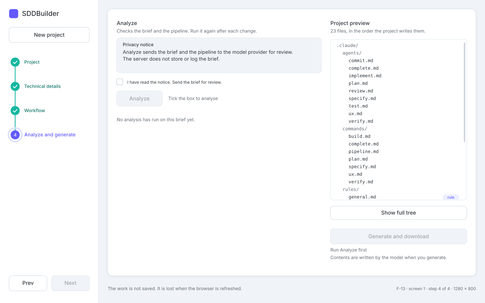
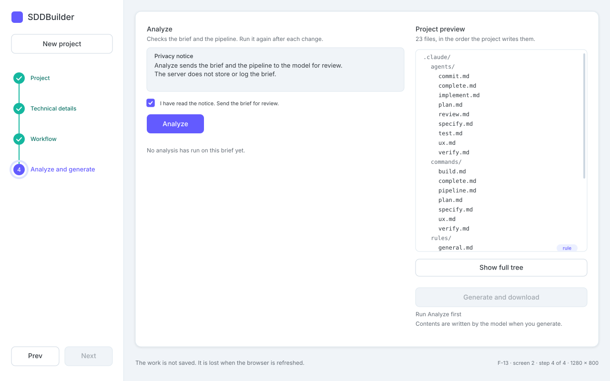
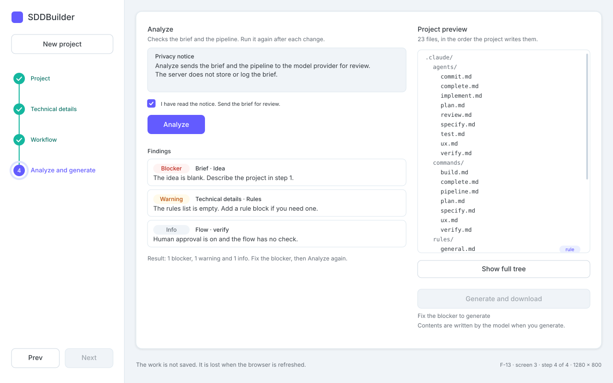
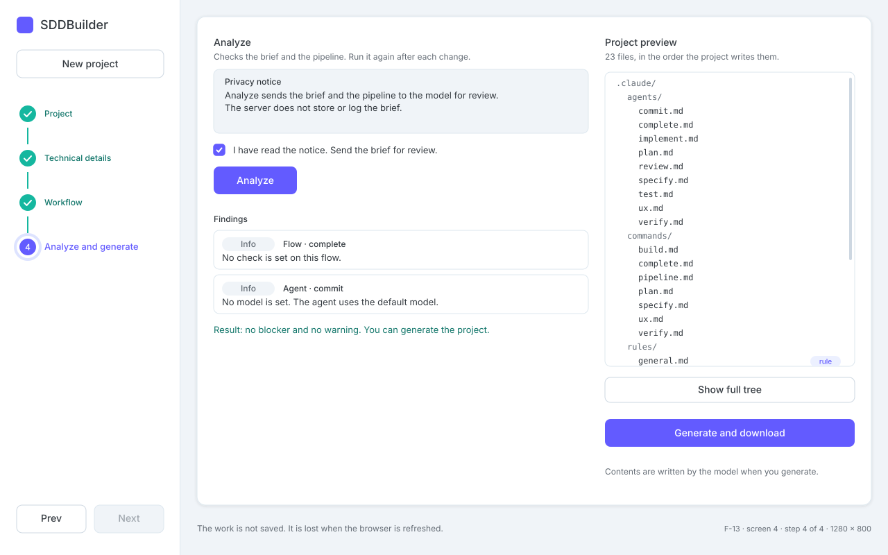
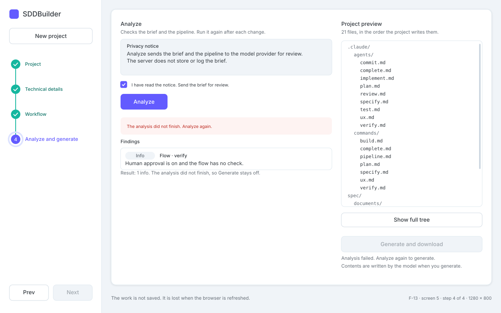
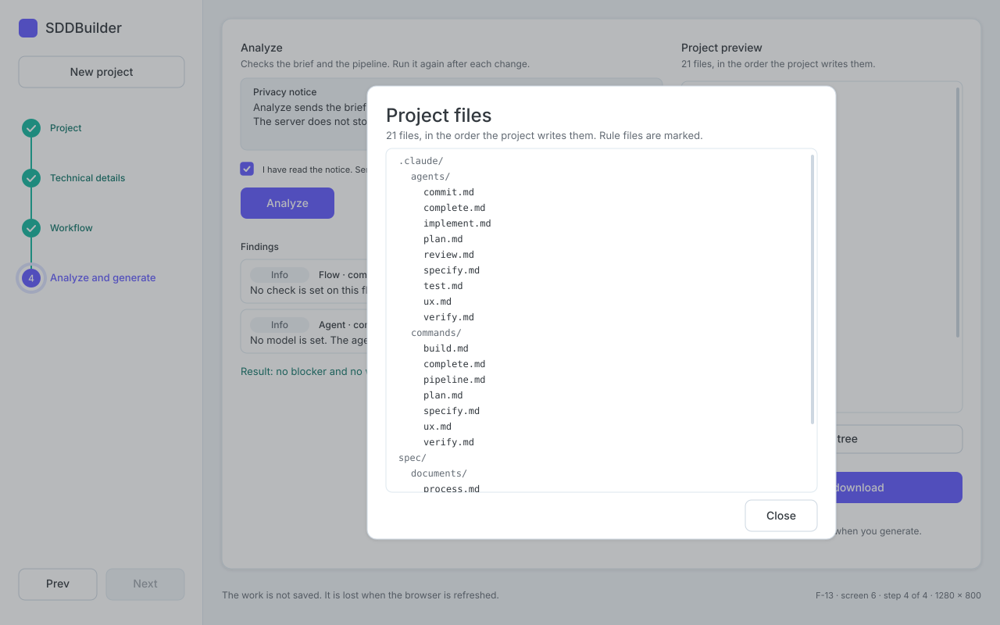
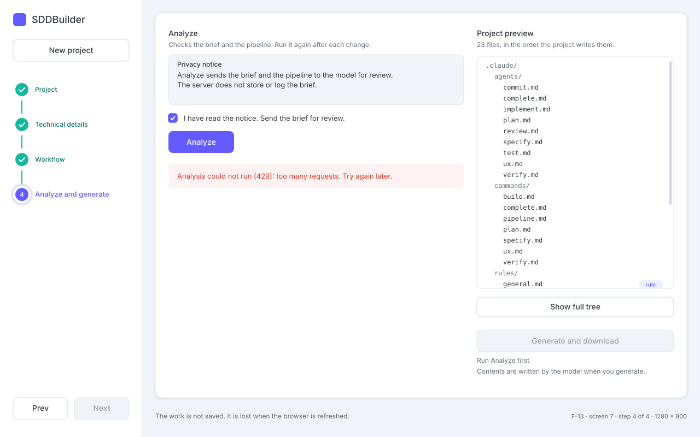
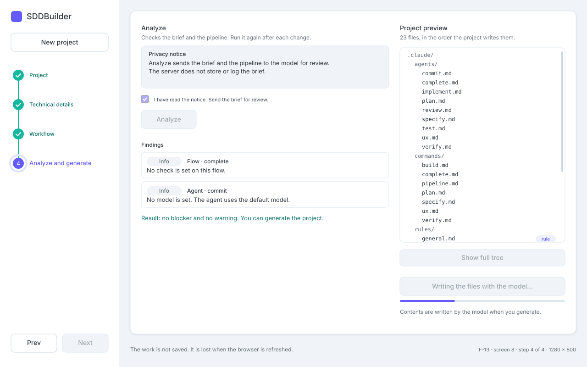

Step 4 of the wizard on the approved frame (F-07 and F-08). Eight screens: the step before analysis, the analysis results, the failed analysis, the expanded file list, an error and the pending generation. Wireframes only; read screens.md.
The checkbox is unticked. Analyze is disabled with its reason. Generate and download is disabled with the reason Run Analyze first.

The checkbox is ticked and Analyze is enabled. No findings yet.

Three findings with severity, subject and message. Generate and download is disabled with the reason Fix the blocker to generate.

No blocker and no warning: Generate and download is enabled.

The analysis did not finish, which is an error: the note asks the user to Analyze again, the structural finding is still shown, and Generate and download stays disabled.

The full file tree in a scrollable panel, opened from Show full tree. Rule files are marked.

The service answered 429. The error is shown as text; the checkbox stays ticked and Analyze is enabled to try again.

Generate and download is pending: the button reads Writing the files with the model, with a progress line. The other controls are disabled; the file list stays visible.
